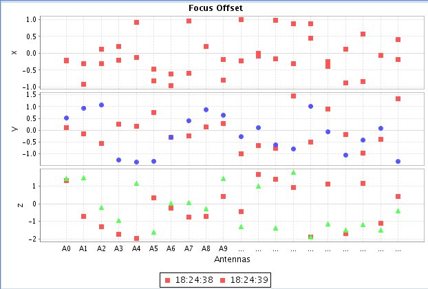

| SBName | Source | Mode | Status | SBDuration | NumEB | NumScan | NumRepeat | Frequence | Frequence Band | line |
| sb1 | Ori_1686 | Expert | Ready | Ready | 1 | 1 | 0 | 2 | 240G Hz | 1 |
| source | X | Y | Z |
| Ori_1686 | 1111 | 2222 | 3333 |
| M_26 | 12343 | 22332 | 113333 |
| MaxPWVC | none |
| Seeing | none |
| PhaseStability | none |
| Parameter | Value | ||||||
| ExecBlockId | ExecBlock_0 |  | |||||
| TelescopeName | test | ||||||
| configName | A | ||||||
| Numantenna | 2 | ||||||
| baseRangeMin | 0.0 | ||||||
| baseRangeMax | 0.0 | ||||||
| baseRmsMinor | 0.0 | ||||||
| baseRmsMajor | 0.0 | ||||||
| basePa | 0.0 | ||||||
| TimeInterval | 4673445432323 | ||||||
| ObserveName | No name | ||||||
| ObservingLog | 1 1 "one" | ||||||
| SchedulerMode | Queue | ||||||
| ProjectId | test | ||||||
| siteLongitude | 0.0 | ||||||
| siteLatitude | 0.0 | ||||||
| siteAltitude | 0.0 | ||||||
| flagRow | false | ||||||
| execBlockUID | null | ||||||
| abort | false | ||||||
| antennaID | 1 2 | ||||||